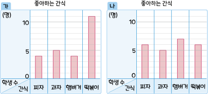

5. 자료와 막대그래프
막대그래프로 자료를 해석해 볼까요
수학
116~117
쪽
수학 익힘
81
쪽
[
~
]
은지네 반과 연호네 반 학생들이 좋아하는 간식을 조사하여 각각 막대그래프로 나타낸 것입니다. 물음에 답해 보세요.

가
와
나
중 은지네 반과 연호네 반 학생들이 좋아하는 간식을 나타낸 그래프는 각각 어느 것인가요?
은지네 반 학생들이 좋아하는 간식을 나타낸 그래프:
그래프
연호네 반 학생들이 좋아하는 간식을 나타낸 그래프:
그래프
가 그래프는 한 종류의 간식을 많은 학생들이 좋아하는 것으로 나타났고 나 그래프는 간식을 골고루 좋아하는 것으로 나타났습니다.
 은지네 반 학생들이 좋아하는 간식을 나타낸 그래프: 그래프연호네 반 학생들이 좋아하는 간식을 나타낸 그래프: 그래프
은지네 반 학생들이 좋아하는 간식을 나타낸 그래프: 그래프연호네 반 학생들이 좋아하는 간식을 나타낸 그래프: 그래프